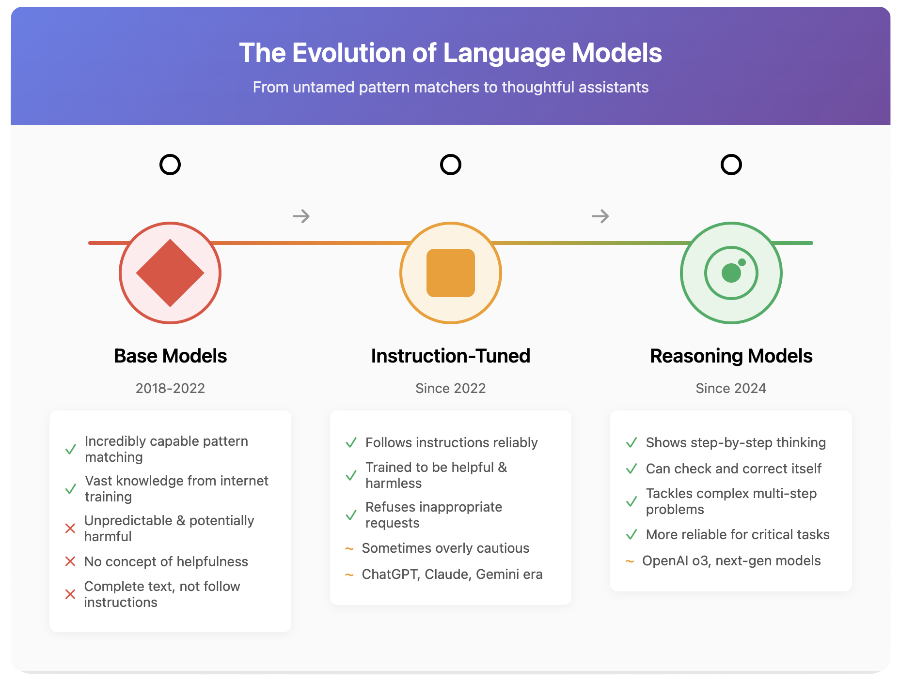
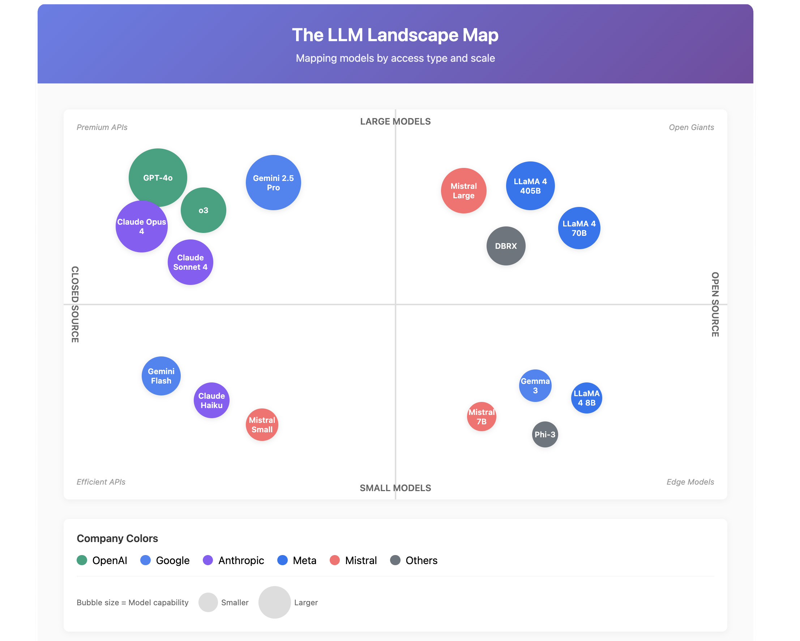

Chapter 2: The LLM Ecosystem – Navigating the Model Zoo
A Moving Target
Here's a warning right up front: by the time you read this, at least half of what I'm about to tell you will be outdated. New models drop weekly. Today's breakthrough is tomorrow's old news. Companies leapfrog each other constantly.
But that's exactly why understanding the ecosystem matters more than memorizing model names. It's like learning to recognize car types rather than memorizing every model BMW ever made. The specifics change; the patterns remain.
From Wild to Tamed: The Evolution of LLMs
Let me tell you a story about how we got here.
The Wild West: Base Models
The first powerful LLMs were what we call "base models" – raw pattern-matching engines trained on vast amounts of internet text. Imagine teaching someone to speak by having them read every book, article, and forum post ever written, with no guidance on what's appropriate or helpful.
These models were incredibly capable but completely unpredictable. Ask them to write a poem, and they might give you beautiful verse – or launch into a racist tirade they picked up from some dark corner of the internet. Request help with code, and they might provide a brilliant solution – or confidently explain how to build a bomb.
Base models are like brilliant but feral minds. They absorbed everything without judgment: Shakespeare and spam emails, scientific papers and conspiracy theories, helpful advice and harmful content. All patterns were equal to them.
The Training Wheels: Instruction-Tuned Models
The AI companies quickly realized that releasing these wild models to the public was like giving everyone a chainsaw without safety features. Enter "instruction tuning."
This is where models learn not just to complete text, but to follow instructions helpfully and safely. It's like taking that feral genius and sending them to finishing school. Through careful training on examples of helpful responses and human feedback, these models learned to:
- Answer questions rather than just ramble
- Refuse harmful requests
- Admit when they don't know something
- Stay on topic and be genuinely useful
This gave us the ChatGPTs and Claudes we know today – still occasionally wrong or weird, but generally trying to be helpful rather than just spitting out whatever patterns they've seen.
The Thinkers: Reasoning Models
The latest evolution is "reasoning models" – AIs that don't just respond but actually work through problems step-by-step. Models like OpenAI's o3 series or Google's latest offerings can "think out loud," showing their work like a math student.
Instead of pattern-matching their way to an answer, they can break down complex problems, check their logic, and even correct their own mistakes. It's the difference between someone who memorized answers and someone who actually understands the subject.
The Current Landscape: Who's Who in the Zoo
As of early 2025, here's the lay of the land (with the caveat that it's probably already changed):
OpenAI: The Pioneer Losing Its Lead
OpenAI burst onto the scene with ChatGPT and held the crown for years. Their GPT-4o remains a workhorse – reliable, capable, widely supported. Their new o3 reasoning model shows impressive capabilities for complex problem-solving.
But here's the thing: they're no longer the obvious choice. The competition has caught up and, in some areas, surpassed them. It's like being the first smartphone maker – revolutionary at first, but soon everyone has one.
Google: The Sleeping Giant Awakens
Google is emerging as a serious force. Their Gemini 2.5 Pro and Flash models are genuinely impressive – fast, capable, with massive context windows that dwarf the competition. They can hold entire books in memory while chatting with you.
What's clever is their two-pronged approach:
- Closed models (Gemini): Top-tier capabilities available through their services
- Open models (Gemma 3): Smaller but powerful models you can run yourself
This gives users choice: maximum capability with cloud services, or full control with open models.
Anthropic: The Safety-Conscious Competitor
Anthropic's Claude models (Opus 4, Sonnet 4) have won a devoted following, especially among developers and writers. They're known for:
- Exceptional writing ability
- Strong safety features without being annoyingly preachy
- Impressive reasoning capabilities
- Huge context windows for handling long documents
Claude often feels more "thoughtful" in its responses, less likely to hallucinate confidently.
Meta: The Open-Source Champion
Meta (Facebook) deserves enormous credit for releasing powerful models completely open. Their LLaMA series democratized AI in a way that forced everyone else to reconsider their closed approaches. You can download these models, modify them, run them on your own hardware – complete freedom.
Mistral: The European Contender
Mistral AI emerged from nowhere to produce genuinely competitive models, proving you don't need Silicon Valley billions to play this game. They offer both open and closed models, often punching above their weight class.
Open vs. Closed: The Great Divide
The ecosystem splits into two camps:
Closed-Source Models
- You access them through APIs or web interfaces
- The company controls everything
- Usually more powerful and constantly updated
- You're renting, not owning
- Your data goes to their servers
Open-Source Models
- Download and run them yourself
- Complete control and privacy
- Usually smaller and less capable
- You own it forever
- Requires your own hardware
It's like choosing between Netflix (closed) and buying DVDs (open). Each has its place.
The Reality Check
Here's what really matters: we've reached a point where multiple companies offer models that are "good enough" for most tasks. The fierce competition means:
- Prices keep dropping
- Capabilities keep improving
- You have real choices
- No single company can dominate
The best model for writing might be different from the best model for coding, which is different from the best model for analysis. OpenAI no longer automatically wins. Google might be better for long documents. Claude might write more naturally. An open model might be perfect for your privacy-sensitive application.
What This Means for You
Stop looking for "the best" model. Start thinking about:
- What specific task do you need to accomplish?
- How sensitive is your data?
- What's your budget?
- Do you need cutting-edge capabilities or is "good enough" actually good enough?
The ecosystem has matured from "OpenAI or nothing" to a rich marketplace where you can choose based on your actual needs rather than defaulting to whoever was first or loudest.
In the next chapter, we'll explore how these general-purpose models can be transformed into specialists through fine-tuning – turning a generalist doctor into a heart surgeon.
Visuals
License
© 2025 Uli Hitzel This book is released under the Creative Commons Attribution–NonCommercial 4.0 International license (CC BY-NC 4.0). You may copy, distribute, and adapt the material for any non-commercial purpose, provided you give appropriate credit, include a link to the license, and indicate if changes were made. For commercial uses, please contact the author.